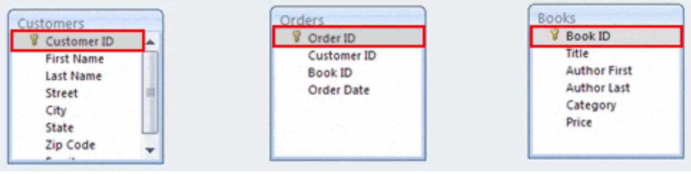
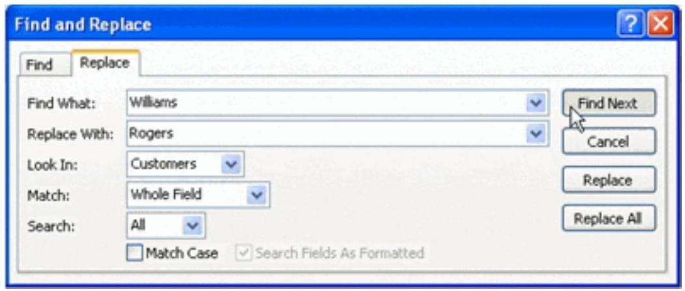
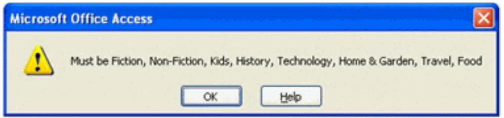

Connecting Data and Populating Tables
Building Table Relationships
Introduction

By now, you've set up the tables you need for your database and have created fields for the different tables. Relationships provide Access 2007 with the means to bring this information together for you when you need it.
This lesson explains how to establish relationships between the tables in an Access 2007 database. You will learn how to read and manipulate the relationship map. You will also learn about primary and foreign keys, relationship types, and referential integrity.
How to establish a relationship between tables:
Click the Relationships command in the Show/Hide group on the Database Tools tab in the Ribbon.
NOTE: Tables must be closed in order to establish relationships.

When the Show Table dialog box appears:
- Select each table name, then click Add for the tables you want to relate.
- When you're done, close the Show Table dialog box.

You should now see a relationship map that contains all of the tables that were selected.

Understanding the relationship map
The relationship map lists all of the tables that were selected to relate, as well as all of the fields that were previously set up for that table. Notice that the first field has a key icon next to it. This is the primary key for the table.
Primary and foreign keys
A primary key is the first field in each table of the database. You may recall that this field auto-numbers by default, so every record in the table has its own unique number to identify it. Access uses this number to quickly pull information together when you run queries or reports, which are covered later.
A foreign key is a field that is the primary field in its own table but that shows up in another table. If you look closely at the Orders table, the fields Customer ID and Book ID appear there, as well as in their own respective tables. These fields are the primary key in their own tables, but in the Orders table, they are considered foreign keys.

Relating tables with the drag-and-drop method:
- Select a field name from one table by holding down the left mouse button.
- Drag the field name from one table to the other table in the desired relationship.
- Drop the first field name onto the field name you want to relate by releasing the left mouse button.

The Edit Relationships dialog box appears.

- Select the Enforce Referential Integrity option. This option is explained in detail below.
- Click Create.
Understanding types of relationships
The relationship type you will come across most frequently—and the one created in our bookstore scenario—is the One-to-Many relationship. It means data for that field will show up a single time in one table but many times in the related table.
For example, the Book ID for a book should appear only once in the Books table, but it will probably appear many times in the Orders table because we hope it gets ordered many times. The symbols for the One-to-Many relationship look like this:

Enforcing referential integrity
You should click Enforce Referential Integrity to make sure you never have an order for a book that doesn't appear in the Books table. Selecting this option tells Access to check for these things when someone is working with your data records.
Adding and Editing Data in Tables
Access 2007 databases hold the actual data records inside tables. You can add, edit, and delete records directly from these tables. This lesson will show you how to work in the tables to add new records, as well as how to edit existing records using commands like copy and paste and find and replace. It will also discuss the dangers involved in deleting records from a table, as well as the importance of setting validation rules and other field properties to ensure data is valid.
Adding records to tables
When you enter records into your table, you are populating the database. In Access 2007, you can do this a few different ways.
To add records in the new record row:
- Click the record row with the asterisk that appears at the bottom of the table.
- Type the data into the appropriate fields.
- Hit Enter or the Tab key to move to the next field.

To add records with the New Record navigation button:
- Click the New Record button in the navigation bar. The navigation bar is located in the bottom-left corner of the open object pane.

Editing records in tables
Sometimes it is necessary to edit records in the database. Like with every other task in Access 2007, this can be done several different ways.
To edit a record directly:
- Scroll through the records, or use the navigation buttons on the navigation bar to find the record to edit.
- Click the cell containing the information that must be edited. A pencil icon appears to indicate edit mode.

- Type the new information into the field.
- Click outside of the record row to apply the change.
To edit a record using Find and Replace:
Click the Find command in the Find group on the Ribbon. The Find and Replace dialog box opens.
- Tell Access what to find by typing it into the Find What: area.
- Type the replace term in the Replace With: area.
- Tell Access where to look with the Look In: drop-down list.
- Tell Access what to Match: Any part of the field, the whole field, or just the start of the field.
- Tell Access how to Search: Up, Down, or All records.
To delete a record:
Select the record you want to delete, then right-click and select Delete Record. A dialog box appears, telling you the action cannot be undone.

There may be other records that rely on the record you are trying to delete. DO NOT delete a record without knowing how it will impact the rest of your database.
Data validation
Data validation is an important database concept. It is the process by which Access tests the data that is being entered into the database to make sure it is in an acceptable—or valid—format. Access 2007 allows you to set field properties and data validation rules to force the person entering data to follow a specific format.
Data validation is accomplished by setting data validation rules and other field properties for various fields. If a field data type had been set to Currency and a text value is entered, Access will not accept an invalid format and will display a validation error.

To set data validation rules:
In Design view, highlight the field that requires a validation rule. In the Field Properties section at the bottom half of the window, set your validation rule using the Expression Builder.

Validation text
Validation text is a specialized error message you can set to have Access tell the user entering data the specific way you want that person to enter it. To set the validation text, enter the error message exactly as you want it to appear to users in the row directly beneath the Validation Rule row.
| Validation Rule | ="Fiction" Or "Non-Fiction" Or "Kids" Or "History" Or "Technology" |
| Validation Text | Must be Fiction, Non-Fiction, Kids, History, Technology, Home & Garden |
The image below shows the resulting error message users would see when the Category validation rule has been broken.
Using field properties to ensure data integrity
Another way to ensure data integrity is by setting field properties such as Field Size, Format, and Required.
- Field Size can be set to hold a specific number of characters.
- The Format field property can be set to display text or numbers in a standardized way.
- Set the Required property to Yes if you want users to be required to enter something in the field.